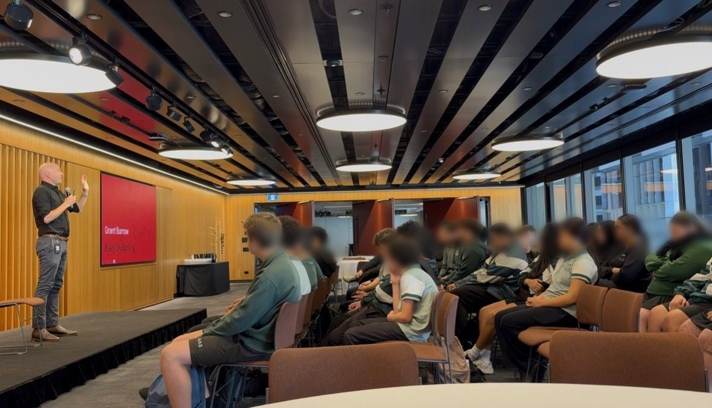

Teaching Year 8/9 students the maths their brains skip
If a 14-year-old sees “50% off”, why do they treat that as money saved?
When my kids ask what bank work looks like, a live demo beats any job description I've tried. Year 8 and 9 students got the same treatment. I started with sneakers, marked down in front of them, because that demo rarely fails.



From the actual session: the envelopes, the handout, and the room.
They answered the wrong question, which was the lesson. A minute earlier, nobody held $160. Spending $80 is what happened; “saving $80” was the story the old price sold them. That $160 figure was planted so every later number would be judged against it, the same move behind every “was, now” tag in a shop window.
Three saving habits, not a budgeting app
After the anchoring demo, the room was ready for habits. Envelope rules come next: simple enough to run without a spreadsheet, a calculator, or an adult looking over a shoulder.
A third, a third, a third
Before you decide what any of the money is for, divide it three ways: spend now, save for something concrete, and put the rest aside for later. Skip the tracker and the app. One rule you can keep is enough.
Name your money
Label each third before it hits your hand (“spending for now,” “saving for phone,” “saving for future”) and it already feels assigned. Cash without a job is cash your brain treats as free to spend.
Out of sight, out of mind
Savings you can't see feel harder to grab, and that friction is why they last. Making a withdrawal slightly annoying is the design, not a bug.
Three spending traps
Saving habits cover only half the story. The other half is spotting the traps: one slide of the moves shops and apps use daily, whether the scarcity or the social proof is real or not.
Everyone has it
“4.8★ from 860 reviews, 1,200+ bought this month.” Other people's choices bleed into what feels safe, even when a quieter option on the shelf would fit better.
Limited time!
“Flash sale ends in 09:47, only 2 left.” A countdown or low-stock tag pushes a decision before there's time to think, whether the shortage is real or staged.
50% off!
“Was $160, now $80.” The crossed-out figure does the selling more than the $80 does. Same move as the opening demo, now sitting on a product tile.
For a teenager, money runs less like a calculator and more like a calculator spliced onto Instagram.
By lunch the word “anchoring” will be gone, and that is fine. Thirty hands went up for “$80 in savings,” then heard, immediately, that they'd fallen for it. That beat worked because they owned the mistake in public. The envelope bit was weaker: I talked through it from the front instead of putting coins in their hands. Afterwards they argued about whatever they had physically handled. Next time, every pair of hands gets coins for that part.
Sneakers went from $160 to $80 live, 50% off. I asked how much they were saving. Hands said “$80.” Wrong: a minute earlier nobody held $160, so nothing was being saved. They were about to spend $80 they did not need to. Anchoring, live, and it unlocked the rest of the talk.
Wrong question, wrong answer. A minute earlier, nobody held $160. The $80 was a spend, not a saving.
A third, a third, a third
Name your money
Out of sight, out of mind
Everyone has it
Limited time!
50% off!
For a teenager, money runs less like a calculator and more like a calculator spliced onto Instagram.
Definitions faded. Saying the wrong answer in front of everyone, then hearing the correction immediately, is what held.
You do not need a talk, envelopes, or marked-down sneakers. Most banking apps already ship the pieces. Here is how those three habits map onto features you likely already have.
Willpower is optional here. Each step locks the decision in before the money hits your hand, so you are not negotiating with yourself after it arrives.
Same idea under two constraints: a brand-new customer who has never heard this, and a home screen with roughly four lines free.
Split it 3 ways from day one
People who set this up tend to save more. Income does not change; the split decision happens once instead of every payday.
Kept tiny on purpose: a wellbeing nudge that fits the screen instead of a full-page interruption.